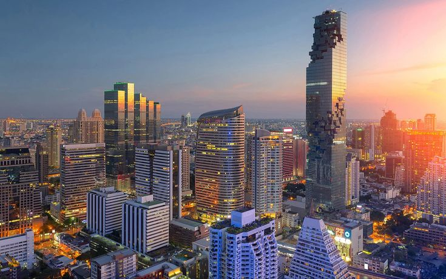

THAILAND • BUSINESS • CULTURE
Thailand's capital and one of Asia's most visited cities, combining entrepreneurship, tourism, culture, affordability and global connectivity.
Bangkok is one of Southeast Asia's most influential cities. It serves as Thailand's political, financial and commercial center while attracting millions of visitors, entrepreneurs and remote workers every year.
The city's affordability, strategic location and international atmosphere make it a major destination for business, tourism and lifestyle opportunities.
Entrepreneurship, trade and regional expansion.
Remote work communities and coworking hubs.
Affordable housing and daily expenses.
Culture, nightlife and global attractions.
Property investment and rental opportunities.
Growing sectors and emerging opportunities.
Bangkok's location makes it a natural gateway to Southeast Asia. The city connects businesses and travelers to regional markets including Singapore, Vietnam, Malaysia, Cambodia and Indonesia.
Its international airports, modern infrastructure and business-friendly environment support both tourism and commercial growth.
Major sectors include tourism, hospitality, finance, retail, logistics, healthcare, manufacturing, technology, education and food services.
Bangkok continues attracting startups, international companies and investors seeking access to Southeast Asia's growing consumer markets.
Popular destinations include the Grand Palace, Wat Arun, Wat Pho, Chatuchak Market, Chinatown, Sukhumvit, Asiatique and the Chao Phraya River.
Bangkok offers a vibrant mix of traditional culture, modern shopping, nightlife, food experiences and urban energy.
Continued investment in transportation, technology, tourism infrastructure and smart-city initiatives is helping Bangkok strengthen its role as one of Asia's most important urban centers.
Its combination of affordability, connectivity and economic growth continues attracting talent and investment from around the world.